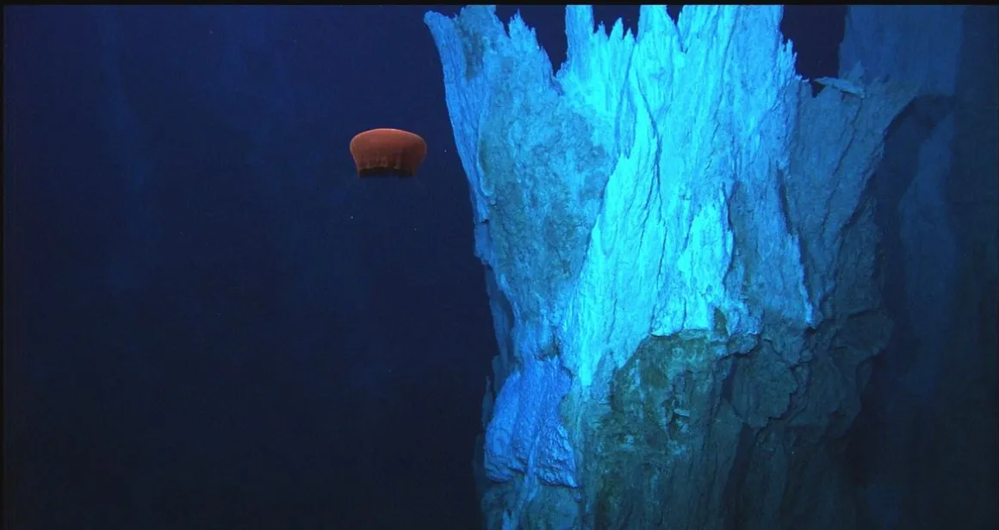

Vivir donde no debería haber vida
Cuando hablamos de vida abisal, nos referimos a las criaturas que viven en lo más profundo del océano, a partir de los 3.000 metros para abajo. Ahí no hay luz, hace muchísimo frío y la presión es tan fuerte que aplastaría cualquier cosa que no esté preparada para eso. Es, literalmente, un mundo aparte. Y aun así, hay vida. Un montón de formas distintas, extrañas, que se adaptaron a condiciones extremas y siguen existiendo allá abajo como si nada.
